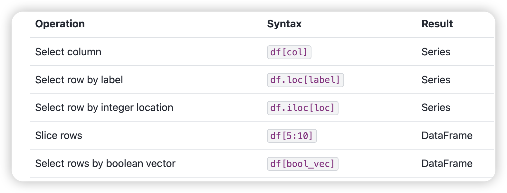
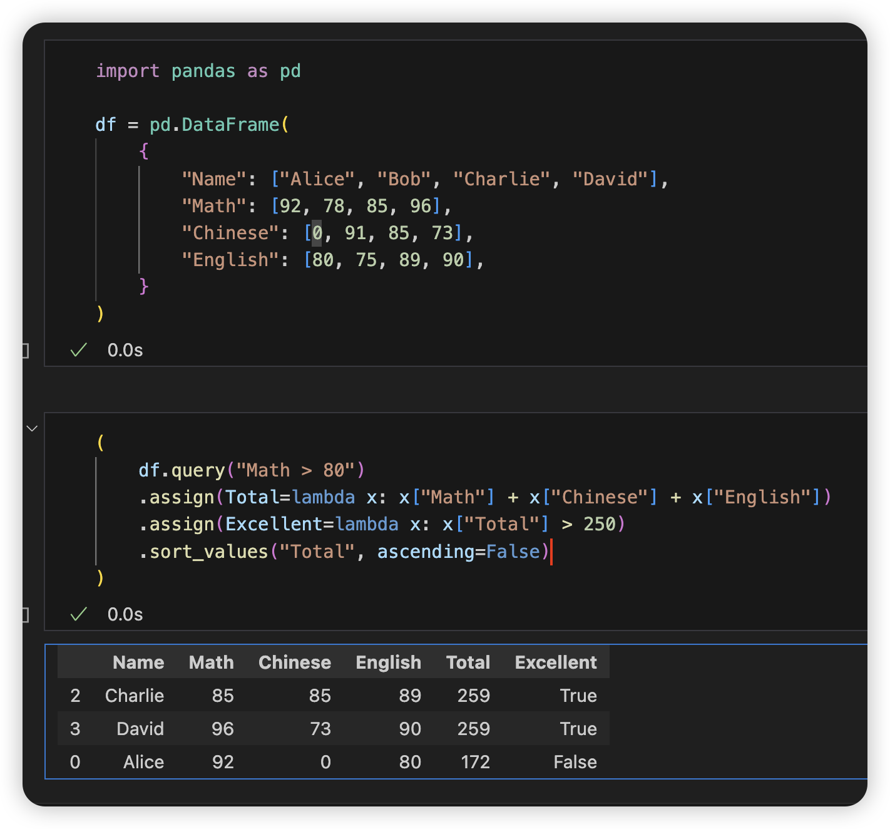

Pandas Tips
Pandas Tips
-
series本来就是像dict，安全的获取元素方式

-
series的运算最重要是自动更具index对齐


-
当我们想要删除nan时

-
当我们指定index和columns时，效果不一样，index是替换，columns是保留/选择

-
列的删除和添加


-
pandas浅拷贝和Copy on write
遇到list里面还有其他指针的可变对象时，需要deepcopy。

常见的切片，取col操作都是COW的，真正共享底层内存需要直接对df.value进行操作。


-
用df.assign()来添加列 配合lambda函数

-
挑选子集

注意直接df[]可以是col，也可以返回是row的切片组合df。

-
df的运算

-
describe()简单总结每一列的情况

-
sort和query


 -
单元素快速数据访问


-
筛选过滤


要注意下面这种情况，不要连着用，不然解释器不知道你对第一个副本做还是对原始df做
使用df.loc明确说

-
pandas的缺失元素

-
强制统一col的元素和顺序 目的是对齐
-
运算
- 自动广播到每一列
- agg 把每一行元素聚合

- transform 利用lambda函数式变化


- 生成df时，加一列是快的 ，加一行是慢的
提前存在list里面 然后直接生成df 不要iteratively去一行行add raw

用字典生成时，[]是行，{}是列,小技巧。
- [{},{},] 一行行字典生成df
- {key1：[], key2:[],} 一列列字典生成df
-
merge合并两个表格


-
df.groupby


-
MultiIndex


-
Category 分类变量


All articles in this blog are licensed under CC BY-NC-SA 4.0 unless stating additionally.